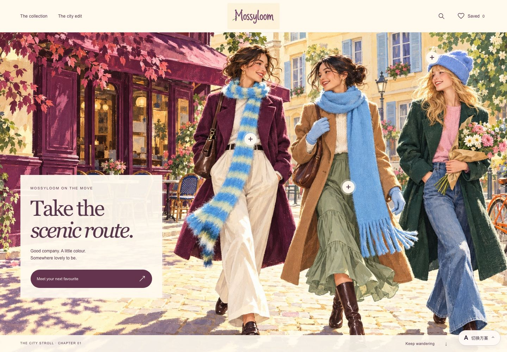
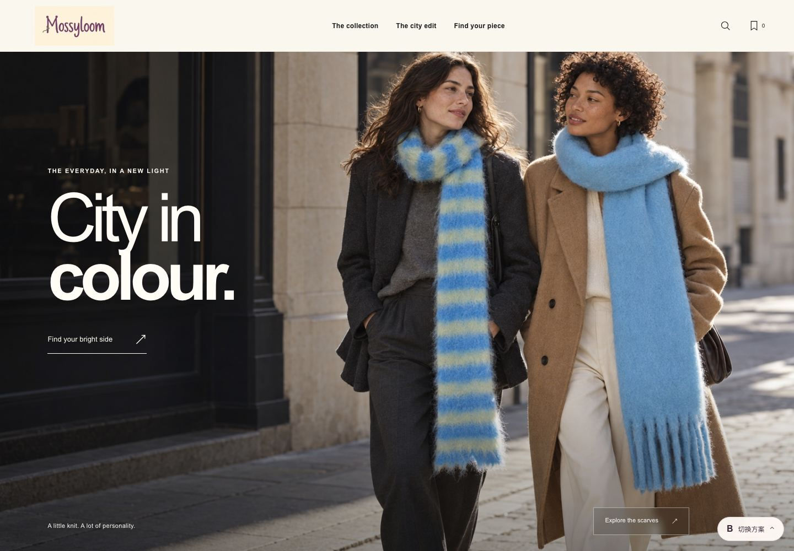
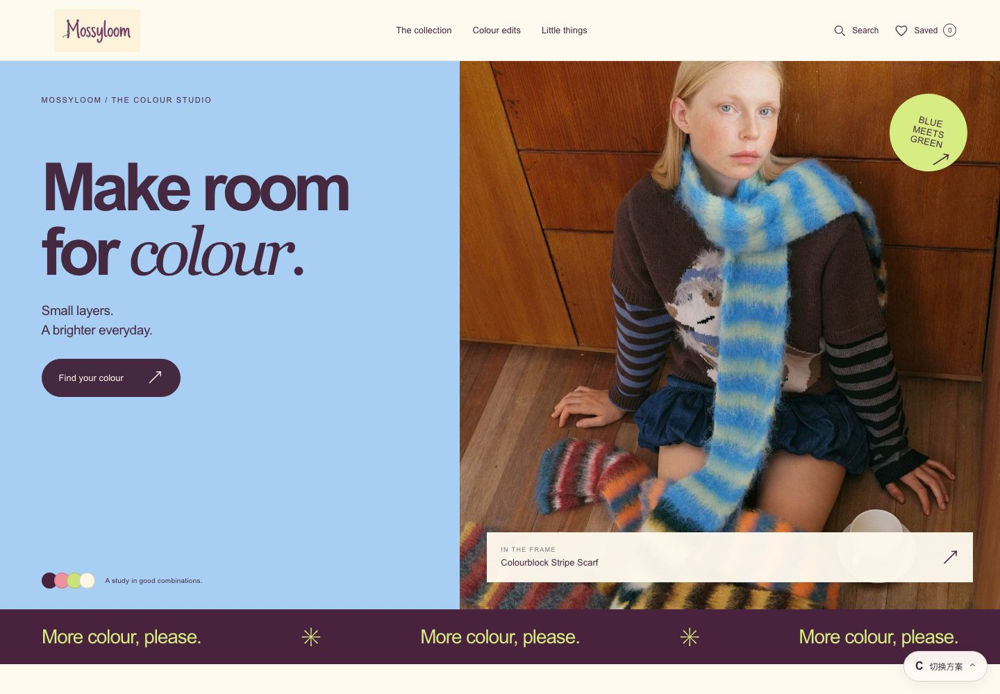
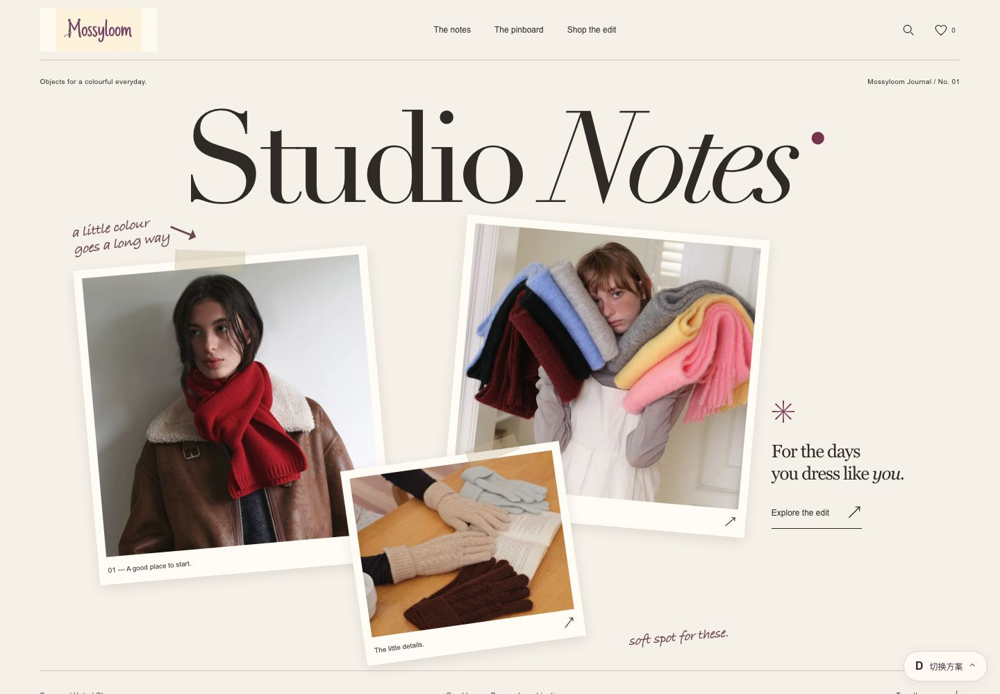
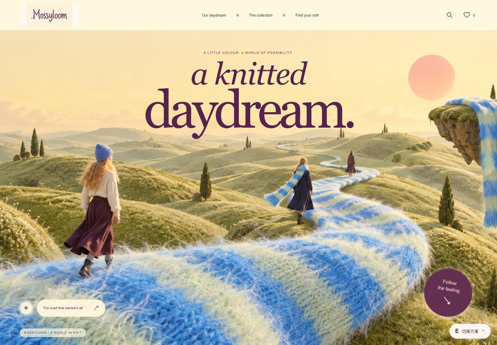
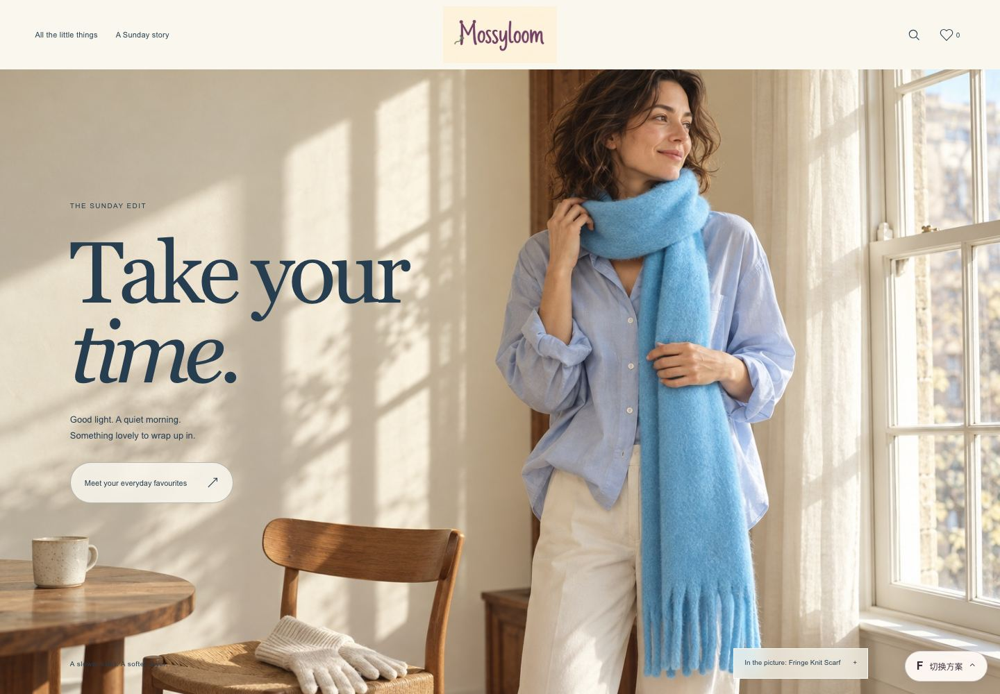

同一个 Mossyloom，六种打开方式
A little colour.
Six little worlds.
CHOOSE YOUR WORLD点击进入可交互 Demo

AILLUSTRATED CITY
City Stroll城市漫游插画
把柔软的色彩，穿进城市的日常。

BFASHION EDITORIAL
City in Colour明亮都市大片
一条鲜明的围巾，就是今天的主角。

CCOLOUR-LED SHOP
Colour Studio色彩配饰商店
从喜欢的颜色，找到下一件心动单品。

DPERSONAL STYLE JOURNAL
Studio Notes女孩的穿搭手帐
穿搭、色样和一点点自己的小心思。

EA SURREAL CAMPAIGN
A Knitted Daydream针织奇想世界
如果一条围巾，可以带你去散步。

FSLOW WEEKEND STORIES
Sunday at Home周末公寓衣橱
阳光、衣橱，还有出门前的最后一件。
柔软有很多种。
找到属于 Mossyloom 的那一种。